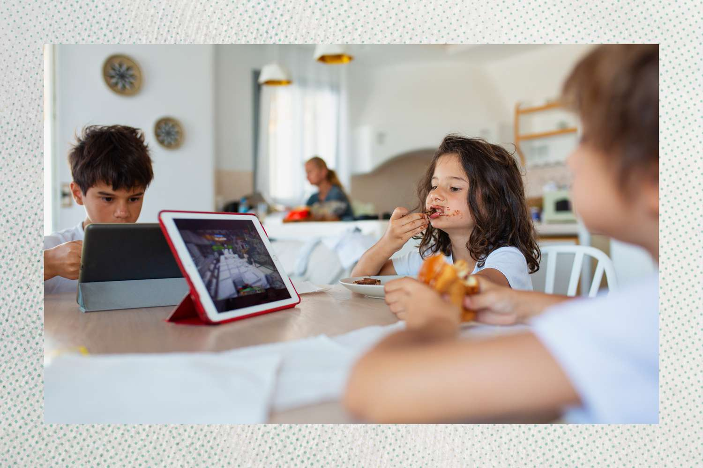

Smart Screen Time for Kids (7–12 years)
⏳ Keep It Under 2 Hours
Children aged 7–12 should have less than 2 hours of screen time per day (outside schoolwork). More time for sleep, exercise and face-to-face fun!
🛡️ Stay Safe Online
Use parental controls and check content ratings. Watch with your child and chat about what they’re viewing.
📅 Make a Family Plan
Create a simple daily screen schedule together — include time for play, homework, and meals with no screens.
🙅♀️ No Screens During Meals or Before Bed
Screens before bedtime affect sleep. Mealtimes are for bonding, not browsing.
📱 Social Media? Not Yet!
Major platforms like TikTok and Instagram require users to be at least 13. No access = more protection.
👀 Look Out for Overuse
If your child gets cranky without a device, or is hiding what they do online, it might be time to adjust screen habits or seek help.
📚 More Resources to Help You
Explore trusted guides and tools to help your child navigate the digital world safely and healthily
